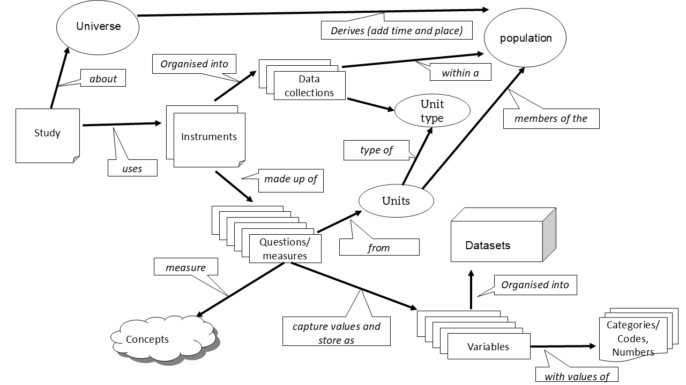

Unit 3. Metadata relationships
Overview
Unit study time 20 minutes
Intended Learning Outcome By the end of the unit, you will be able to ... - Explain why metadata elements must be created separately and linked - Provide examples of what metadata could be linked to variable metadata
Second DRAFT
So far in this course and in the Introduction to Metadata course, we have explored the different types of metadata and how we define each of the items or elements. The Introduction to Metadata course demonstrated the importance of itemising each metadata element in order for us to be able to manage them using a computer [to be added using address as an example]. In this unit, we will demonstrate why this is important and how these pieces fit together.
When creating metadata, it can be tempting to put all the information together in one place, for example, attaching the concept, population, question wording, codes, categories, universe, and dataset details etc. directly to the variables. However, good metadata management keeps these items separate and defines relationships between them instead.
Think about all the metadata items we have discussed, and imagine adding all your metadata directly into a data file. If you embed all study‑level and dataset‑level information in the data file or at the variable level, you would need to repeat the same details such as Study Title, Principal Investigator, Universe, and Population for every row. This would be repeated for every row in your data file, and possibly multiple data files (e.g. table 1 below). The result would be a clunky, unnecessarily large dataset, as you would have columns which are not variables you want to analyse necessarily.
[!NOTE] BO - the last sentence in the paragaph above feels a bit awkward (maybe because of the repetition of "necessarily")
Table 1 data file example (not recommended) | income | age | employment | Study Title | Principal Investigator | Universe | Population | |--------|-----|------------|---------------------|-------------------------|--------------------|--------------------------------------| | 45000 | 35 | FT | Income Survey 2021 | Dr Smith | All individuals | Individuals in England in 2021 | | 52000 | 44 | PT | Income Survey 2021 | Dr Smith | All individuals | Individuals in England in 2021 |
This structure shows study‑level and dataset‑level metadata repeated for every row, creating both inefficiency and a high risk of inconsistency. It also demonstrates why it's important to manage data and metadata seperately.
[!NOTE] BO - It's not 100% clear to me why the above would create a high risk of inconsistency, is it because if you're repeating the information there's a risk you could make a mistake and end up with conflicting info? A short explanation would be helpful
A similar problem arises when handling code lists. You might decide to include all response categories from a question inside a single cell. As Table 2 shows, this quickly becomes unreadable and difficult to maintain, and manage the individual categories, especially if the list is long or used across multiple variables or datasets (e.g. table 2 below).
[!NOTE] BO - I think you can remove (e.g. table 2 below) because the sentence starts with "As Table 2 shows"
Table 2 dataset level example (not recommended)
| Variable Name | Concept | Universe | Population | Question Text | Codes & Categories | Study Title | Principal Investigator |
|---|---|---|---|---|---|---|---|
| income | Household income | All individuals | Individuals in England in 2021 | "What was your total household income last year?" | (none) | Income Survey 2021 | Dr Smith |
| age | Age of respondent | All individuals | Individuals in England in 2021 | "What is your age?" | (none) | Income Survey 2021 | Dr Smith |
| employment | Employment status | All individuals | Individuals in England in 2021 | "What is your employment status?" | 1 = FT; 2 = PT; 3 = Unemployed; 4 = Student | Income Survey 2021 | Dr Smith |
Alternatively you could seperate them out into different cells which would be more appropriate, but if you keep them together with the question or other information, you would need to repeat that information for each row, making the table larger and harder to maintain.
[!NOTE] BO - Could the above sentence be rephrased to something like this to make it easier to read? "If you keep the code list metadata with the question or other information, you need to repeat that metadata for each row, making the table larger and harder to maintain. A more appropriate solution would be to seperate them out into different cells."
Table 3 question level example (not recommended) | Question Label | Question Text | Code | Category Label | |----------------|-----------------------------------|------|----------------| | Q_EMP_STATUS | "What is your employment status?" | 1 | Full‑time | | Q_EMP_STATUS | "What is your employment status?" | 2 | Part‑time | | Q_EMP_STATUS | "What is your employment status?" | 3 | Unemployed | | Q_EMP_STATUS | "What is your employment status?" | 4 | Student |
This is clearer, but we can already see the repetition and the challenges of attaching question‑level metadata directly to category‑level data.
These issues arise because the metadata elements relate to one another in different ways - some belong at higher conceptual levels (such as study or dataset), while others repeat across many variables or categories. This inherent mix of levels and multiplicity means that no single table can capture all metadata correctly without becoming redundant, inconsistent, or unmanageable.
Effective metadata management therefore relies on keeping elements separate and linking them properly.
[!NOTE] HM - we should mention or link to the template here or somewhere on this page to show how it should be managed? BO - agreed!
Reasons to manage items separately - Reduces redundancy and large unmanagle files. Repeating higher‑level metadata at lower levels leads to redundancy. This makes the data file: unnecessarily large, difficult to maintain, prone to inconsistencies, conceptually messy (metadata mixed with analytic variables). - Improves readability and usability. Adding multiple items to a single cell element means it becomes unreadable, hard to manage, hard to edit, hard to reference. - Avoids duplication (and the errors that come with it). Keeping items separate means consistency across the entire study. - Supports reuse (across waves, studies, or projects), reduces effort and increases long‑term value. e.g. a question can link to many variables, a concept can link to multiple questions. - Supoorts machine readability and automation. Structured, separate items can be processed by tools, scripts, and metadata systems without guesswork or manual interpretation. - Provides more clarity and meaning. If information is collapsed, users must rely on long descriptions, relationships become invisible, and errors and misinterpretations become more likely. - Scalability. It is possible to scale effectively as studies grow, without becoming unmanageable.
[!NOTE] BO - should the first bullet say "...large unmanageable files..."?
However, it is not enough to document the item level metadata and know what each piece of information is. We also need to understand how different pieces connect in order for metadata to be used usefully. We need to provide the link or links between the variable and the study or the question and the response categories for example.
[!NOTE] BO - maybe change "used usefully" to "used effectively" to avoid repetition. The second sentence above feels a bit awkward, what about "For example, we need to provide the link(s) between the variable and the study, or the question and the response categories."
Relationships help us organise, manage, discover, and reuse information effectively.
Managing metadata is managing relationships
When we talk about managing metadata, we are not managing the data itself. Instead, we are managing: - the structure, - the items, and - the relationships between different items of information.
Good metadata management involves: - Grouping real world things of the same items (e.g. all variables, all concepts, all datasets) - Describing how they relate to one another (e.g. “this variable comes from this question in this dataset for this subset of the population”) - Making these connections understandable to both humans and machines so tools can present information clearly, automate processes, create efficient research workflows
Managing relationships provides clarity about: what the metadata item is, how it fits within the wider structure, and how it should be used for both humans and computers.
Relationships between metadata add semantic context. Instead of isolated facts, you get a connected story: Experiment ↔ version ↔ date ↔ location This helps others (and future-you) understand why the data exists, not just what it is. “This dataset was generated by this method, using this instrument, for this project.”
The following section will describe how key metadata components relate to one another and why managing relationships is central to managing metadata.

These relationships allow users to trace a variable back to its origin, understand its context, and interpret it accurately. They provide context and meaning. For example, if we have the variable "marital status" on its own, it doesn't include addtional the metadata we require like the codelist value representation, nor does it have the provenence. However, if we add links as shown in the diagram and below, we can find associated metadata.
| Variable name | Variable label | Variable description | Value representation | Data type | Missing value codes | Codelist reference | Dataset reference | Question / measurement reference |
|---|---|---|---|---|---|---|---|---|
| height_cm | Height (cm) | Height measured without shoes to nearest cm. | Numeric | Positive integer | -9 = missing | — | 7058_ylt11_teaching | Q_9 |
| birthdate | Date of birth | Date of birth in ISO 8601 format. | Date | ISO date | -9 = missing | — | 7058_ylt11_teaching | Q_4 |
| marital_status | Marital status | Self-reported marital status category. | Codelist | Numeric | -9 = missing | CL_marital_status | 7058_ylt11_teaching | Q_16 |
By managing relationships effectively, we help both humans and machines answer key questions: - What is this thing? (e.g. a variable measuring income) - What does it represent? (concept) - Who does it apply to? (unit type and universe) - Where did it come from? (question, instrument, dataset, study) - How does it relate to other things? (derived variable, classification scheme)
Understanding these relationships ensures that variables and questions can be interpreted correctly. For example, knowing which respondents answered a particular question or were eligible for a particular measure can help you understand missing values in the assocaited variable.
Summary of benefits of managing metadata relationships
Relationships between metadata items... - explain how things fit together. Moves from isolated facts to a meaningful network. A variable on its own tells you what it measures. A variable with relationships can tell you; which question produced it, which concept it reflects, which universe was eligible to answer it etc. - turn the metadata into a dynamic structure which can allow you to actively use the metadata to; - - trace provenance - move between linked items - automate documentation - support harmonisation - automatically generate questionnaires or data dictionaries - can tell you how to use something correctly. They supply the context that enables correct interpretation and analysis. - prevent duplication. They allow you to store each item once and link it wherever needed. This reduces workload, prevents divergence, and supports consistency across waves and studies. - support reuse and make metadata scalable and efficient. - make metadata machine-actionable.